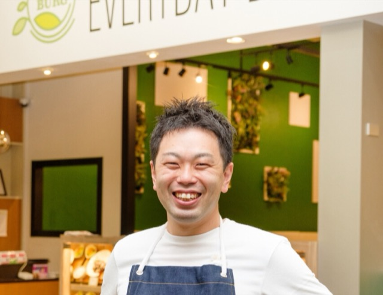
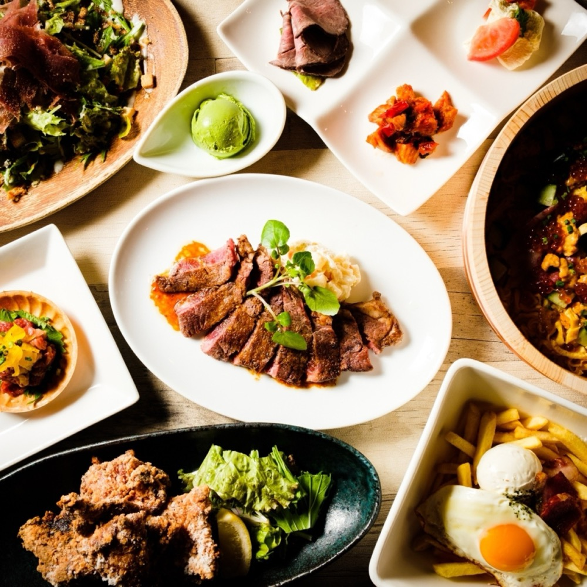
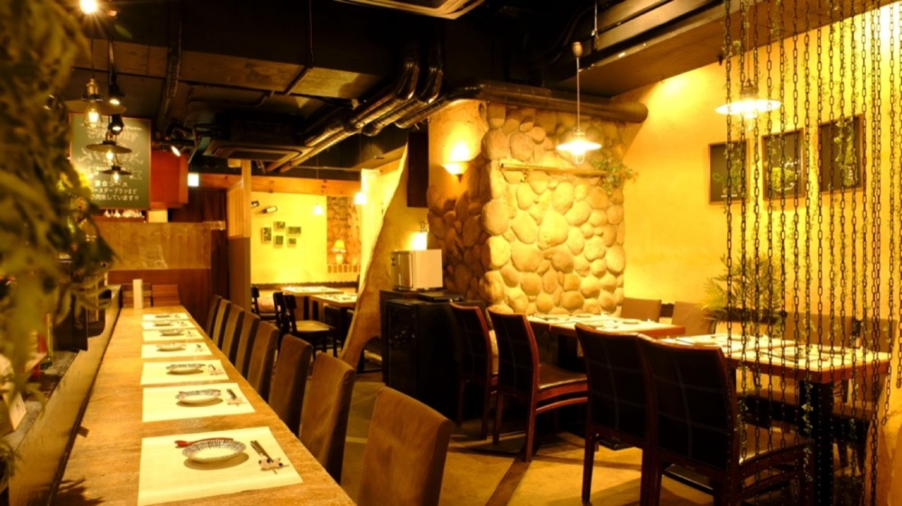
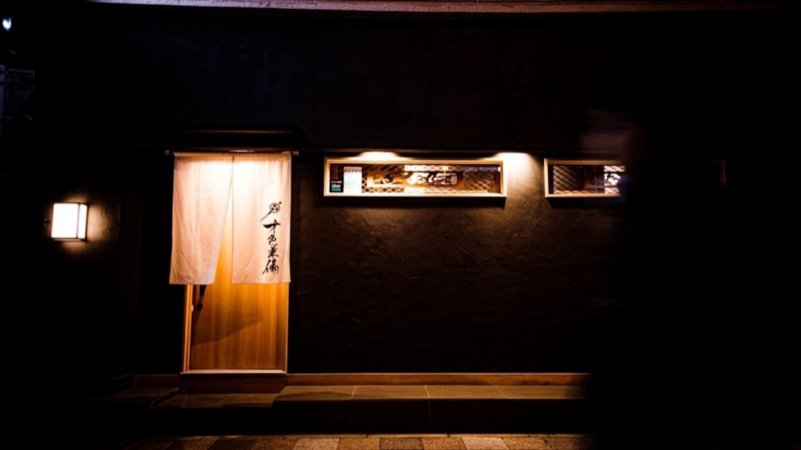

モットーは「笑門来福」6店舗を構えている千葉の若旦那
島田 悠一Yuichi Shimada
株式会社ワラカド 代表
千葉県船橋市出身。2007年、上智大学卒。2008年に株式会社リクルートスタッフィング入社後、2010年に和食居酒屋「秀吉」入社。2012年、個人事業主として居酒屋「笑かど」を設立し、2019年、株式会社ワラカドを創業。
企業サイトを見るTRACK 01
モットーは「笑門来福」6店舗を構えている千葉の若旦那

株式会社ワラカドは『串焼きと大衆酒場 笑かど』をはじめとした飲食店を6店舗6業態、すべて自社開発で展開している千葉の会社だ。学生の方でも気軽に訪れることができるカジュアルな居酒屋から、特別な空間とぜいたくなひとときを味わえる焼肉店まで幅広く展開している。
社名は『笑う門には福来る』ということわざから来ていると話す創業者の島田代表。地域の方はもちろん、スタッフの笑顔を守ることを大切にしつつ、『地域の方に愛される』そして『地域の方が求めている』お店づくりをモットーにしているという。
「最初の拠点を千葉にして以来、ご縁をいただいて、現在6店舗まで出店にこぎつけてきました。そのほとんどがたまたま千葉県だったというのも深い縁を感じています。
TRACK 02
浪人時代を乗り越えて見つけた「大切さ」とは

進学校に通っていたものの、実は勉強についていけず落ちこぼれていた高校時代の島田代表。しかし1年間浪人生として死ぬ気で勉強し、そこで第一志望の大学に入学できたことで『やりきることの大切さ』を学べたという。
そして卒業して社会人3年目、自分の夢であった起業を叶えようと真剣に考えたときに『メンバー一人ひとりが主役になれる』点に魅力を感じ、飲食業で起業することを決意。その後28歳で、地元の高根公団で串焼き居酒屋をオープンした。
しかし設立して数年、売上も芳しくなく、社員はどんどん離れていき、代表自身が自暴自棄になりそうな時期があったという。「そんなとき父に「お前の強みはポジティブなところしかないんだから、頑張れ」と言われたんです。そこでハッと「やりきることの大切さ」を思い出して、なんとかくじけずに頑張り続けて今につながっています。あの言葉がなかったら、今の僕はいませんよ。」と島田代表は語る。
